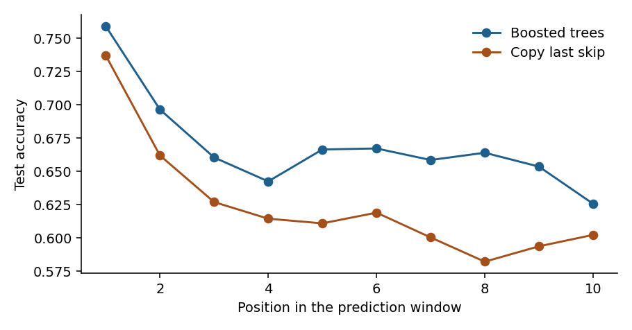
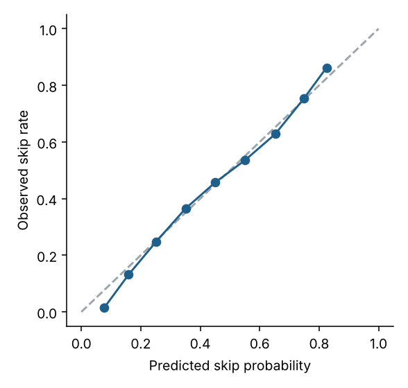

Error analysis
Where and why the model is wrong
Everything on this page is for the boosted-tree model on the test sessions, with threshold . Looking at errors tells us what the model understands and what it misses. The sentences with numbers on this page are written from the saved result files, so they always match the tables and figures.
- The model is right on about two of every three test songs, and it makes more false skips than false keeps.
- It beats the copy-last rule at every queue position, and its edge is larger later in the queue.
- It is weakest when the first half is mixed, because the history then points in no clear direction.
- Its probabilities are close to the real skip rates, so they can be read as probabilities.
- Its typical mistake is to follow the first-half pattern when the listener changes behaviour in the second half.
The mistakes it makes
A "false skip" is a song that was kept but the model said skip. A "false keep" is the opposite. Overall accuracy is .
Accuracy by position in the queue

Accuracy by how much the listener skipped in the first half
When the first half is mixed (some skips, some kept), the history gives no clear direction. The model has little else to use, because audio features add little (see the Results page).
Accuracy by music source and by subscription
Are the probabilities honest? (calibration)

Four real sessions
We picked these sessions by fixed rules, not by hand: the most confident false skip, the most confident false keep, a session where the listener changed behaviour, and a typical session.
In all four examples the model follows the first-half pattern: it expects skips after a skip-heavy first half and keeps after a keep-heavy one. In the examples with a skip-heavy first half, its skip probability also falls along the queue, because the history says less about songs far from its end. It cannot know that the listener changed mood in the second half (the "momentum broke" session). That is the main kind of mistake it makes.
What the errors tell us about the research question
The errors fit the finding on the Results page. The model knows how the session has been going, and that is where nearly all its skill comes from. It does not know why a listener skips a particular song, so it cannot predict a change of mood, and audio features do not make up for this. A model that also saw which songs come next, or a user ID, might fix some of these errors, but those are outside this classical-model, session-only setting (see Limitations).